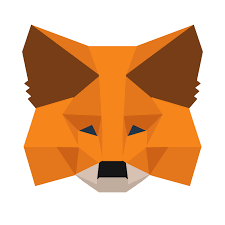

Our Technology
Blockchain Technology
A blockchain is a digital ever-growing list of data records. Such a list is comprised of many blocks of data, which are organized in chronological order and are linked and secured by cryptographic proofs.

Web 3.0
Web 3.0 (also known as Web 3.0 and sometimes stylized as web3) is an idea for a new iteration of the World Wide Web based on blockchain technology, which incorporates concepts such as decentralization and token-based economics.

MetaMask
MetaMask is a software cryptocurrency wallet used to interact with the Ethereum blockchain. It allows users to access their Ethereum wallet through a browser extension or mobile app, which can then be used to interact with decentralized applications.